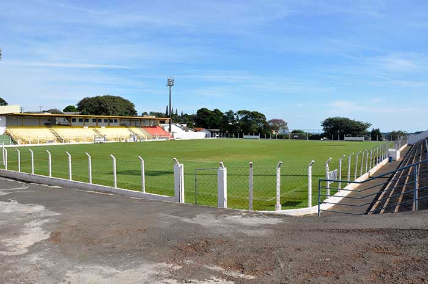
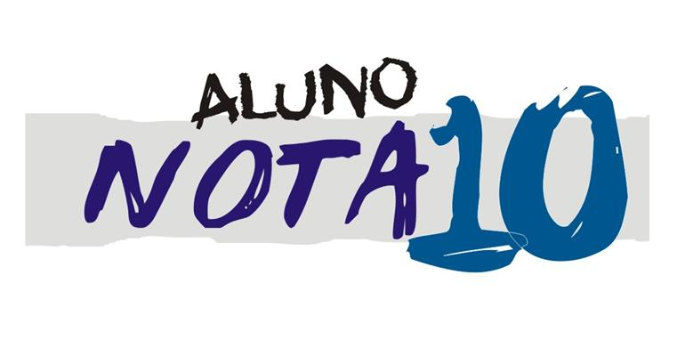

Bem-vindo à nossa ONG!
Futebol para Todos é uma organização dedicada a oferecer oportunidades para jovens praticarem futebol, promovendo a inclusão social e o desenvolvimento de habilidades pessoais e coletivas.


Objetivos de Desenvolvimento Sustentável (ODS)
- ODS 3: Saúde e Bem-Estar
- ODS 4: Educação de Qualidade
- ODS 10: Redução das Desigualdades
Nosso objetivo é usar o futebol para promover esses objetivos, proporcionando a jovens em situação de vulnerabilidade social a oportunidade de uma vida mais saudável e plena.
Nosso Trabalho

